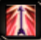

Orb of Deffensive Aura
Poder para aumentar la defensa.
Cae en Noria.
Orb of Offensive Aura
Poder para aumentar el ataque.
Cae en todos los mapas.
Orb of Heal
Poder para curar la vida.
Cae en Noria.
Triple Shot
Poder para disparar flechas por tres.
Aparece cuando se tiene un arma con el skill.
Summon Mob 1
Poder que invoca un Goblin.
Cae en Noria.
Penetration
Poder de disparo concentrado.
Cae en todos lo mapas.
Multiple Shot
Poder para disparar flechas múltiples.
Cae en Aida, Land of Trials, Kanturu, Raklion y Relic.
Ice Arrow
Poder de hielo, sirve para congelar a los oponentes.
Cae en la mayoría de los mapas.

Infinity Arrow
Poder que mientras esta activo, hace que no se consuman flechas.
Se obtiene luego de realizar la Quest de Marlon.
Crystal of Recovery
Principalmente para usar en PVP. Sirve para recuperar vida despues de un ataque de otro personaje.
Cae en Aida, Land of Trials, Kanturu, Raklion y Relic.
Orb of Spearthrust
Poder que permite pegar con una lanza subido a un uniria o dinorant.
Cae en Lorencia.
Orb of Hell Blast
Poder que lanza el arma hacia arriba y al caer, hace daño en área.
Cae en Tarkan, Icarus, y Stadium.
Orb of Death Stab
Poder que permite realizar una estocada “mele” (o sea, desde cerca).
Cae en Tarkan y Stadium.
Crystal of Destruction
Poder que causa daño en área golpeando el piso, tiene un alcance de 5 y atributo de hielo.
Cae en Land of Trials, Kanturu, Raklion, y Relic.
Life Swelling Orb
Poder que otorga un buff que aumenta la vida máxima.
Cae en la mayoría de los mapas.
Twisting Slash
Poder que permite girar el arma alrededor del personaje haciendo daño a su alrededor.
Cae en Dungeon, Davias, Atlans y todos los Lost tower.
Cyclone
Poder para causar daño y acercarte al target.
Se obtiene cuando un arma tiene este skill.
Failing slash
Poder para causar daño y acercarte al target.
Se obtiene cuando un arma tiene este skill.
Shield
Poder para aumentar la defensa del personaje.
Se obtiene cuando un arma tiene este skill.
Combo
Poder que permite encadenar 3 habilidades obteniendo una explosión que hace gran daño.
Se obtiene al hacer la 2da quest de Marlon.
Scroll of Summon
Poder que permite estando en party, teletransportar a otros personajes a la misma ubicación del DL.
Cae en Davias, Atlans, Lost Tower, y Stadium.
Scroll of Fire Burst
Poder que lanza cadenas que al impactar al objetivo hace daño a su alrededor.
Cae en Davias, Atlans, *
Scroll of Chaotic Diseier
Poder que para eliminar a los oponentes, lanza una bruma oscura.
Cae en Land of Trials, Kanturu, Raklion, y Relic.
Scroll of Critical Damage
Poder que permite mediante un buff, aumentar el daño crítico realizado a los mobs.
Cae en Tarkan, Icarus, y Stadium.
Scroll of Fire Scream
Poder que lanza 3 rafagas de fuego que se extienden desde la parte delantera del DL.
Cae en todos los mapas.
Scroll of Electric Spark
Poder que destila una oleada de electricidad que daña todo lo que se encuentra en su camino.
Cae en Aida, Land of Trials, Kanturu, Raklion, y Relic.
Earthquake
Poder que utilizando el caballo, realiza un pisoton que golpea y mueve a los objetivos.
Para poder tenerlo, se necesita estar montado en un caballo.
Raven Attack
Poder que utilizando un cuervo, permite atacar de diferentes formas.
Para poder tenerlo, se necesita tener un cuervo equipado.
Lightning Scroll
Poder que dispara un rayo que golpea al objetivo.
Cae en Lorencia.*
Poison Scroll
Poder que envenena al oponente. Los objetivos envenenados lentamente pierden vida.
Cae en Lorencia.
Meteorite Scroll
Poder que convoca un meteorito desde el cielo para dañar al objetivo.
Caen en Lorencia y Dungeon.
Orb of Spearthrust
Poder que permite pegar con una lanza subido a un uniria o dinorant.
Cae en Lorencia.
Ice Scroll
Poder que golpea con hielo sobre los oponentes congelandolos.
Cae en Lorencia, Davias, y Atlans.
Power Wave Scroll
Poder que dispara una bola de energia hacia el objetivo.
Cae en Dungeon y Atlans.
Fire ball
Poder que dispara una bola de fuego que impacta en el objetivo.
Cae en Lorencia y Dungeon.
Evil Spirits Scroll
Poder que convoca espiritus que van dañando objetivos que se encuentran alrededor en un área amplia.
Cae en Lorencia, Davias, Atlans y en todos los Lost Tower.
Hell Fire Scroll
Poder otorga la habilidad de realizar un impacto en el suelo con forma de estrella.
Cae en Tarkan, Icarus, y Aida.
Aqua Beam Scroll
Poder que permite lanzar un razo de agua y penetrar en varios objetivos.
Cae en Tarkan, Icarus, *.
Fire Slash
Poder que hace un barrido con la espada y los objetivos dañados ven disminuidas sus defensas.
Cae en Tarkan, Icarus,
Power Slash
Poder que dispara saetas de rayos que hacen daño en forma de cono.
Se obtiene cuando un arma tiene este skill.
Blast Scroll
Poder que conjura un meteorito de energía, el cual tiene poco alcance pero hace gran daño.
Cae en Tarkan, Icarus, *
Inferno Scroll
Poder que crea un anillo de fuego a su alrededor, quemando lo que esta a su alcance.
Cae en Tarkan, Icarus, Stadium *
Scroll of Gigantic Storm
Poder que permite crear una tormenta electrica que daña en todas las direcciones.
Cae en Land of Trials, Kanturu, Raklion, y Relic.
Flame Scroll
Poder que convoca un pilar de llamas que causa daño contínuo.
Cae en Lorencia, Davias, *
Twister Scroll
Poder que lanza tornados pequeños hacia el objetivo.
Cae en Dungeon, Davias, Atlans, y Land of Trials.
Crystal of Flame Strike
Poder que permite generar grandes llamas desde la espada y explotan en el objetivo.
Cae en Land of Trials, Kanturu, Raklion y Relic.
Cyclone
Poder para causar daño y acercarte al target.
Se obtiene cuando un arma tiene este skill.
Twisting Slash
Poder que permite girar el arma alrededor del personaje haciendo daño a su alrededor.
Cae en Dungeon, Davias, Atlans y todos los Lost tower.
Lightning Scroll
Poder que dispara un rayo que golpea al objetivo.
Cae en Lorencia.*
Poison Scroll
Poder que envenena al oponente. Los objetivos envenenados lentamente pierden vida.
Cae en Lorencia.
Meteorite Scroll
Poder que convoca un meteorito desde el cielo para dañar al objetivo.
Caen en Lorencia y Dungeon.
Fire ball
Poder que dispara una bola de fuego que impacta en el objetivo.
Cae en Lorencia y Dungeon.
Ice Scroll
Poder que golpea con hielo sobre los oponentes congelandolos.
Cae en Lorencia, Davias, y Atlans.
Power Wave Scroll
Poder que dispara una bola de energia hacia el objetivo.
Cae en Dungeon y Atlans.
Evil Spirits Scroll
Poder que convoca espiritus que van dañando objetivos que se encuentran alrededor en un área amplia.
Cae en Lorencia, Davias, Atlans y en todos los Lost Tower.
Flame Scroll
Poder que convoca un pilar de llamas que causa daño contínuo.
Cae en Lorencia, Davias, y Dungeon.
Mana Shield Scroll
Poder para dar buff a uno o a la party, que reduce el daño de acuerdo a la energía que tengas.
Cae en Tarkan, Icarus, y Stadium.
Aqua Beam Scroll
Poder que permite lanzar un razo de agua y penetrar en varios objetivos.
Cae en Tarkan, Icarus, y Atlans.
Hell Fire Scroll
Poder otorga la habilidad de realizar un impacto en el suelo con forma de estrella.
Cae en Tarkan, Icarus, y Aida.
Blast Scroll
Poder que conjura un meteorito de energía, el cual tiene poco alcance pero hace gran daño.
Cae en Tarkan, Icarus y Stadium.
Inferno Scroll
Poder que crea un anillo de fuego a su alrededor, quemando lo que esta a su alcance.
Cae en Tarkan, Icarus y Stadium.
Twister Scroll
Poder que lanza tornados pequeños hacia el objetivo.
Cae en Dungeon, Davias, Atlans y Land of Trials.
Teleport Scroll
Poder que permite teletransportarse dentro del mismo mapa a corta distancia.
Cae en Atlans, Tarkan, Icarus y Stadium.
Ice Storm Scroll
Poder que permite lanzar una tormenta de hielo que daña a todos los objetivos y los relentiza. Se puede utilizar únicamente luego de realizar la quest de Sabina.
Cae en Land of Trials, Kanturu, Raklion y en Relic.
Scroll of Wizardry Enhance
Poder que aumenta el daño magico. Se puede utilizar únicamente luego de realizar la quest de Sabina.
Cae en Aida, Land of trials y Kanturu.
Nova Scroll
Poder que concentra energía y la libera en forma de una gran explosión que causa daño. Se puede utilizar únicamente luego de realizar la quest de Sabina.
Cae en Tarkan, Aida y Land of trials.
Decay Scroll
Poder que lanza meteoritos color verde que envenenan y dañan al objetivo. Se puede utilizar únicamente luego de realizar la quest de Sabina.
Cae en Kanturu, Raklion y Relic.
Mass Teleport Scroll
Poder que permite transportar a un miembro de tu party a tu ubicación.
Cae en Tarkan, Stadium, Icarus y Aida.